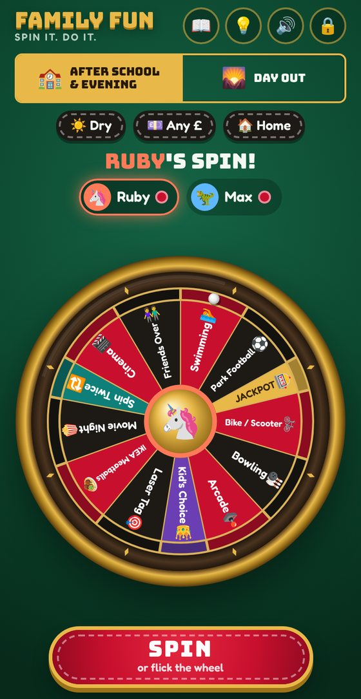

Family Fun Wheel
Spin it. Do it.
Stuck for something to do with the kids? Put your ideas on a roulette wheel, take turns to spin, and whatever the ball lands on is the plan.
- Free
- No app store
- No sign-up
- Stays on your phone

Put it on your phone
It takes a minute. On the phone the family will use, open the app and add it to the home screen. Then it opens like a normal app.
iPhone
- Open the app in Safari.
- Tap the Share button (the square with an arrow pointing up).
- Scroll down and tap Add to Home Screen, then Add.
- Open Fun Wheel from your home screen.
Android
- Open the app in Chrome.
- Tap the ⋮ menu in the top corner.
- Tap Install app or Add to Home screen.
- Open Fun Wheel from your home screen.
Make it your family's
- Add your players. The first time it opens, type in everyone who'll take a turn and pick an avatar each.
- Set a grown-up PIN. Tap 🔒 at the top and choose four numbers. The kids can spin and suggest ideas, but only grown-ups can change the list.
-
Swap in your own activities. The wheel starts with an example list from the family who made it, plus suggested places around Exeter. In 🔒 Activities:
- tap a switch to take something off the wheel or put it on
- tap ✏️ to change something, or + Add an activity for your own ideas
- there are two lists: After school & evening and Day out
- Fill in the details. For each activity, set roughly what it costs and whether it needs good weather. That's what the filters use.
Set an activity's type to ✉️ Mystery to hide a surprise plan on the wheel, or 🎰 Jackpot for a rare big treat.
Spin!
- Choose the kind of fun: After school & evening or Day out. Tap the chips for rainy days, a budget, or staying at home.
- Whoever's turn it is spins. Flick the wheel round with a finger (harder means longer) or press Spin. The app keeps track of whose turn it is.
- The ball decides. Tap Let's do it!, or use a 🛑 Veto. Everyone gets one veto a month, and the same person spins again.
- 🎰 Jackpot
- A thin gold pocket, so it's rare. Lands on a big treat.
- ✉️ Mystery
- A secret plan a grown-up added. You find out on the day.
- 👑 Kid's Choice
- Whoever spun picks anything on the wheel.
- 🔁 Spin Twice
- Two more spins, and you do both together.
Afterwards
- 📸 Add the memory. A banner asks how it went. Add photos, and everyone gives it stars and their best bit.
- 📖 Look back. The scrapbook keeps every memory, and the Hall of Fame shows your family's favourites.
- 💡 Kids' ideas. The kids can suggest new things to do. Once a grown-up approves one, it goes on the wheel with their face on it.
Good to know
- Who can see our list and photos?
- Only you. Everything is saved on your phone, not online. The person who sent you this can't see it, and you can't see theirs.
- Can two phones share one wheel?
- Not yet. Each phone has its own wheel, so pick one phone for the family.
- What if I lose my phone?
- Now and then, go to 🔒 Settings, tap Copy backup, and paste it into a note or an email to yourself. Paste it back into Restore from backup on the new phone. Photos aren't in the backup, but ones you picked from your camera roll are still there.
- No sound?
- Check the speaker at the top says 🔊, not 🔇. Tap the screen once, then spin.
- Forgotten the PIN?
- Add
#reset-pinto the end of the app's web address and open it. You can remove the PIN, and nothing else is lost. - Does it need signal?
- Only the first time. After that it works offline and updates itself when you're back online.